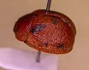
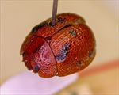
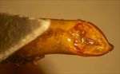
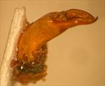
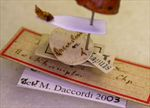
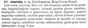

Click on images to enlarge
.jpg){kind=link}

Paropsis exarata type specimen, lateral view
.jpg){kind=link}

Paropsis exarata type specimen, dorsal view
{kind=link}

Paropsis exarata type specimen, aedeagus, dorsal view
{kind=link}

Paropsis exarata type specimen, aedeagus, lateral view
.jpg){kind=link}

Paropsis exarata type specimen, labels
{kind=link}

Paropsis exarata, description
Name
Trachymela exarata (Chapuis, 1877)
Type specimen
Location: RBINS
Label data: "Queensland" (round label); “Coll. Chapuis”, "TYPE", "Type", “P. exarata Chp. Rockhampton”, “Trachymela exarata (Chp.) ref. M. Daccordi 2003”
Male; Length 9 mm (from original description); aedeagus extracted at some time in past and glued to a card; HCE/BL = 24.5% (approximately, measured from photo of type)
Original description
[Original description shown in figure, translated from Latin using ChatGPT, 04/2026]
Broadly ovate, convex, yellowish-brown or reddish-brown. Head densely punctate, longitudinally rugose. Pronotum rather sparsely but coarsely punctate; the interspaces finely striolate and punctulate; laterally depressed, with the larger punctures crowded. Scutellum finely punctulate. Elytra strongly punctate-striated, the interspaces finely punctulate; testaceous, with four black spots on each elytron; with nine somewhat broader intervals, slightly tuberculate a little behind the base. Length 9 mm. [Rockhampton, King George Sound]
Notes
Blackburn (1896) deals with P. exarata as part of his 'subgroup ii' (i.e., those species without "strongly marked characters", whose greatest height is not or scarcely in front of the middle of the elytral margin and whose elytra are depressed under the humeral callus). He separates exarata from all other species in this subgroup by the "inner edge of humeral callus equidistant between suture and lateral margin of elytra" rather than "distinctly nearer to lateral margin of elytra than to suture". Note that he does not deal at all with cancellata (due to not having seen a specimen), and treats asperula as part of his 'subgroup iii' (differing from 'subgroup ii' by the elytra depressed under the humeral callus". P. exarata's type specimen (with aedeagus extracted) is essentially identical to a typical Ta09. In the same paper that he described T. exarata with indicated localities of Rockhampton and King George Sound (the latter unlikely to be correct), Chapuis also describes T. asperula, with type locality Rockhampton, and P. cancellata, with a type locality of Brisbane. These three are almost certainly the same species.
References
Blackburn, T. 1896, "Revision of the genus Paropsis. Part I", Proceedings of the Linnean Society of New South Wales, vol. 21, no. 4, 637-693 (page 657).
Chapuis, F. 1877, "Synopsis des espèces du genre Paropsis", Annales de la Société Entomologique de Belgique (Comptes-rendus), vol. 20, 67-101 (page 93).
Copyright © 2026. All rights reserved.